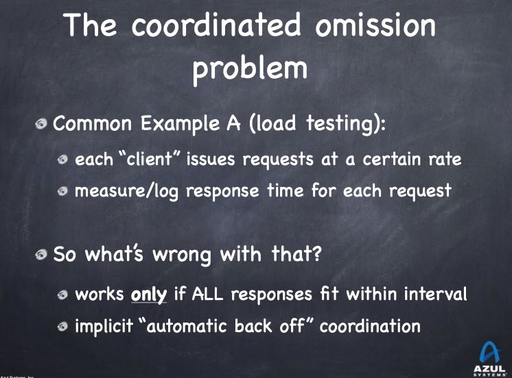
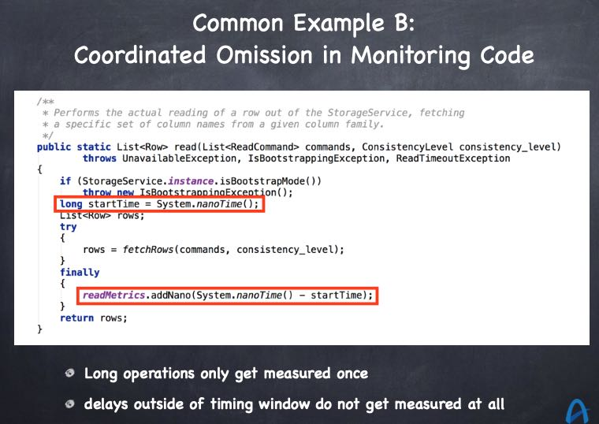
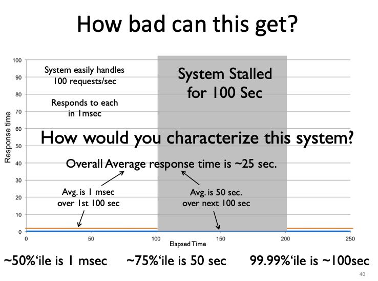
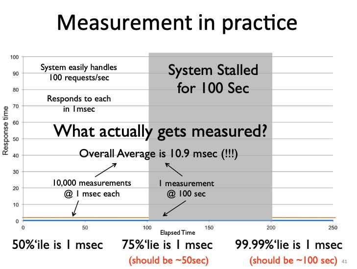
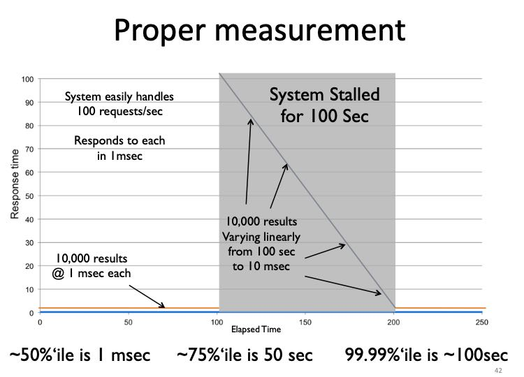
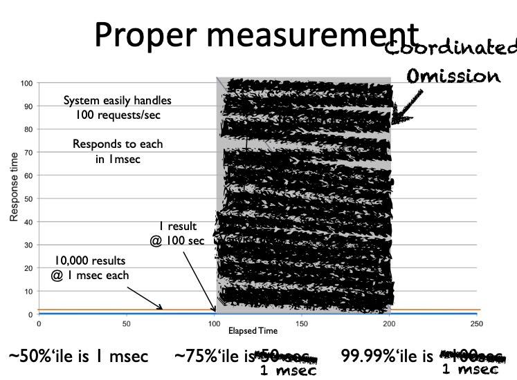
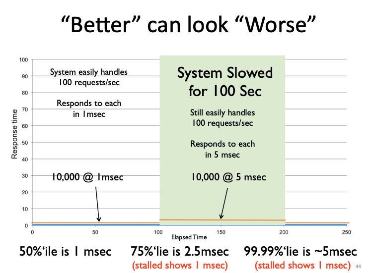
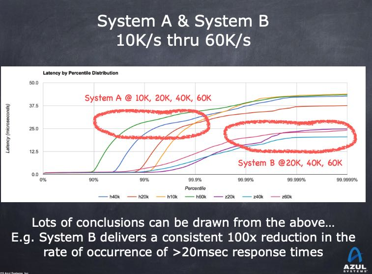

How NOT to Measure Latency
https://www.infoq.com/presentations/latency-response-time/ https://bravenewgeek.com/everything-you-know-about-latency-is-wrong/ http://hdrhistogram.org/
如何正确地测量和解读延迟。里面有这么几个重点：
- 我们关注的不是单个延迟，而是延迟的分布。
- 95%, 99% pth反应不了真实情况，大部分用户会经历超过99%的延迟，取平均就更没有什么意义了。
- CO(coordinated omission) 协调一致的忽略，这个词不太好翻译。我们测量工具和方法，本身就让我们看到更好看的数据，而不是系统真实表现。
- 测量延迟的关键就在于，区分service time/response time. service time是你看到的系统服务时间，而response time是用户真实感受到的时间。
因为CO的原因，会让你的service time看起来非常非常的好，但是实际的response time是非常非常的差。作者给出了几个CO的例子，这些例子我们现实中经常遇到：第一个就是压力测试工具一旦发现系统不响应就会backoff, 其实这个时候系统本身已经出问题了，但是这段时间的延迟数据被忽略。最后系统表现好的时候我们测量次数多，而表现不好的时候测量次数少。第二个就是我们在代码里面增加timer.start()/stop(), 然后选择99%pth，而系统比如因为GC出现的pause时间就是1%，那么最后看到的数据都是没有GC pause时期的数据。


我们对下面一个测量延迟场景做分析。下面是正确的测试方法：
- The average over the first 100 seconds is 1 ms.
- The average over the next 100 seconds is 50 seconds.
- The average over the 200 seconds is 25 seconds.
- The 50th percentile is 1 ms.
- The 75th percentile is 50 seconds.
- The 99.99th percentile is 100 seconds.

但是如果我们在stalled期间只做了1次测量会怎么样呢（测试工具因为迟迟不返回所以挂住了）：
- The average over the 200 seconds is 10.9 ms (should be 25 seconds).
- The 50th percentile is 1 ms.
- The 75th percentile is 1 ms (should be 50 seconds).
- The 99.99th percentile is 1 ms (should be 100 seconds).

正确的测试方式应该如下，就是在stalled期间我们依然需要发起请求，如果我们期间不做任何请求话，那么就是CO


使用CO得到的错误延迟，不仅仅会让我们对系统有错误的理解，还会让我们认为某些改进是不好的。如果我们将stalled期间的延迟下降到了5ms，得到的数据反而比stalled的要更差。
- The 50th percentile is 1 ms
- The 75th percentile is 2.5 ms (stall showed 1 ms)
- The 99.99th percentile is 5 ms (stall showed 1 ms)

一切问题都是错误的测量方法导致的。
得到latency数值之后应该如何使用它呢？首先我们不能只使用99%, 至少也要99.99%或者干脆是max. 然后如果这个latency太高的话，通常意味着系统负载是过来的，没有办法处理过来，所以我们应该在系统指定的吞吐下进行压测。测量结果至少应该如下图：两个系统在不同的throughput下面，各自的99.9%, 99.99% latency有多少。如果我们选择99.99% latency作为参考，那么看这个latency是否可以接受。如果不能接受，那么就需要继续降低吞吐，知道符合latency条件为止。此时我们才能知道系统的正常负载是多少，然后在这个复杂下面比较各个系统的延迟，然后再进行容量规划。
